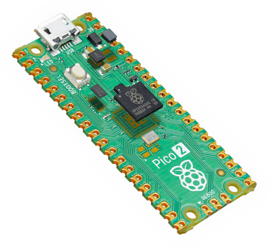

Raspberry Pi Pico 2
The Raspberry Pi Pico 2 is a general purpose board supplied by Raspberry Pi.

Features
RP2350 microcontroller chip
Dual-core ARM Cortex M33 processor, flexible clock running up to 150 MHz
520kB of SRAM, and 4MB of on-board Flash memory
Castellated module allows soldering direct to carrier boards
USB 1.1 Host and Device support
Low-power sleep and dormant modes
Drag & drop programming using mass storage over USB
26 multi-function GPIO pins
2× SPI, 2× I2C, 2× UART, 3× 12-bit ADC, 16× controllable PWM channels
Accurate clock and timer on-chip
Temperature sensor
Accelerated floating point libraries on-chip
12 × Programmable IO (PIO) state machines for custom peripheral support
Serial Console
By default a serial console appears on pins 1 (TX GPIO0) and pin 2 (RX GPIO1). This console runs a 115200-8N1.
The board can be configured to use the USB connection as the serial console. See the usbnsh configuration.
Pin Mapping
Pads numbered anticlockwise from USB connector.
Pad |
Signal |
Notes |
|---|---|---|
1 |
GPIO0 |
Default TX for UART0 serial console |
2 |
GPIO1 |
Default RX for UART1 serial console |
3 |
Ground |
|
4 |
GPIO2 |
|
5 |
GPIO3 |
|
6 |
GPIO4 |
Default SDA for I2C0 |
7 |
GPIO5 |
Default SCL for I2C0 |
8 |
Ground |
|
9 |
GPIO6 |
Default SDA for I2C1 |
10 |
GPIO7 |
Default SCL for I2C1 |
11 |
GPIO8 |
Default RX for SPI1 |
12 |
GPIO9 |
Default CSn for SPI1 |
13 |
Ground |
|
14 |
GPIO10 |
Default SCK for SPI1 |
15 |
GPIO11 |
Default TX for SPI1 |
16 |
GPIO12 |
|
17 |
GPIO13 |
|
18 |
Ground |
|
19 |
GPIO14 |
|
20 |
GPIO15 |
|
21 |
GPIO16 |
Default RX for SPI0 |
22 |
GPIO17 |
Default CSn for SPI0 |
23 |
Ground |
|
24 |
GPIO18 |
Default SCK for SPI0 |
25 |
GPIO19 |
Default TX for SPI0 |
26 |
GPIO20 |
Default TX for UART1 serial console |
27 |
GPIO21 |
Default RX for UART1 serial console |
28 |
Ground |
|
29 |
GPIO22 |
|
30 |
Run |
|
31 |
GPIO26 |
ADC0 |
32 |
GPIO27 |
ADC1 |
33 |
AGND |
Analog Ground |
34 |
GPIO28 |
ADC2 |
35 |
ADC_VREF |
Analog reference voltage |
36 |
3V3 |
Power output to peripherals |
37 |
3V3_EN |
Pull to ground to turn off. |
38 |
Ground |
|
39 |
VSYS |
+5V Supply to board |
40 |
VBUS |
Connected to USB +5V |
Other Pico 2 Pins
GPIO23 Output - Power supply control. GPIO24 Input - High if USB port or Pad 40 supplying power. GPIO25 Output - On board LED. ADC3 Input - Analog voltage equal to one third of VSys voltage.
Separate pins for the Serial Debug Port (SDB) are available
Power Supply
The Raspberry Pi Pico 2 can be powered via the USB connector, or by supplying +5V to pin 39. The board had a diode that prevents power from pin 39 from flowing back to the USB socket, although the socket can be power via pin 30.
The Raspberry Pi Pico chip run on 3.3 volts. This is supplied by an onboard voltage regulator. This regulator can be disabled by pulling pin 37 to ground.
The regulator can run in two modes. By default the regulator runs in PFM mode which provides the best efficiency, but may be switched to PWM mode for improved ripple by outputting a one on GPIO23.
Supported Capabilities
NuttX supports the following Pico 2 capabilities:
UART (console port)
GPIO 0 (UART0 TX) and GPIO 1 (UART0 RX) are used for the console.
I2C
SPI (master only)
DMAC
PWM
ADC
Watchdog
USB device
MSC, CDC/ACM serial and these composite device are supported.
CDC/ACM serial device can be used for the console.
PIO (RP2350 Programmable I/O)
Flash ROM Boot
SRAM Boot
If Pico SDK is available, nuttx.uf2 file which can be used in BOOTSEL mode will be created.
Persistent flash filesystem in unused flash ROM
There is currently no direct user mode access to these RP2350 hardware features:
SPI Slave Mode
SSI
Timers
Installation
Download Raspberry Pi Pico SDK
$ git clone -b 2.2.0 --recurse-submodules https://github.com/raspberrypi/pico-sdk.git
Download and install
picotoolNote
If not found at build time, this tool will also be automatically compiled from the SDK sources. Manually downloading or compiling it is preferred, though.
Instructions can be found here: https://github.com/raspberrypi/picotool
If you are on Arch Linux, you can also install
picotoolthrough the AUR:$ yay -S picotool
Set PICO_SDK_PATH environment variable
$ export PICO_SDK_PATH=<absolute_path_to_pico-sdk_directory>
Configure and build NuttX
$ git clone https://github.com/apache/nuttx.git nuttx
$ git clone https://github.com/apache/nuttx-apps.git apps
$ cd nuttx
$ make distclean
$ ./tools/configure.sh raspberrypi-pico-2:nsh
$ make V=1
Connect Raspberry Pi Pico 2 board to USB port while pressing BOOTSEL. The board will be detected as USB Mass Storage Device. Then copy “nuttx.uf2” into the device. (Same manner as the standard Pico SDK applications installation.)
To access the console, GPIO 0 and 1 pins must be connected to the device such as USB-serial converter.
usbnsh configuration provides the console access by USB CDC/ACM serial device. The console is available by using a terminal software on the USB host.
Configurations
nsh
Basic NuttShell configuration (console enabled in UART0, at 115200 bps).
usbnsh
Basic NuttShell configuration (console enabled via USB CDC/ACM).
smp
Basic NuttShell configuration (console enabled in UART0, at 115200 bps) with both ARM cores enabled.
pm
Power management (console on UART0, at 115200 bps). The idle governor
uses the standby state, and the dormant state 30 seconds after boot; a
character on the console receive pin (GPIO 1) wakes the board. Suspend to
RAM is available through the BOARDIOC_RP23XX_SUSPEND boardctl()
command, and /dev/rtc0 has an alarm.